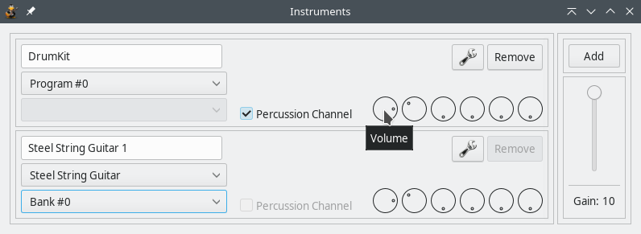
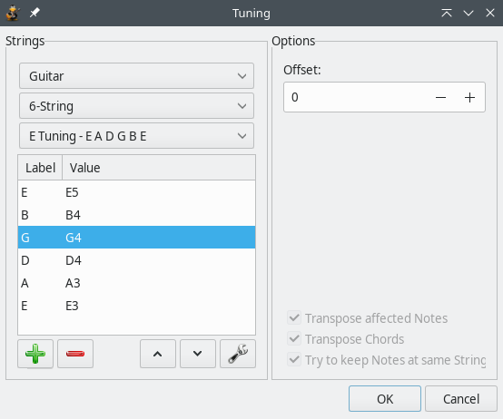

-
Getting started
- The first steps
- Toolbars
- Playing a song
- Making and editing a song
- Tools and settings
The first steps
Creating a new file
The first thing you need to do is make sure you have a brand-new file to work on. When you launch TuxGuitar, you should already have a blank tablature document ready for editing. However, if you need to start over with another blank document, all you have to do is click the New button.

Wow. That was easy. Now that we have blank document, we just need to set up our first track. Then the real fun can begin.
Preparing your first track for playback
At the bottom of the screen, you should see the track table that will look like the one below.

The track table is a very useful yet compact information center which provides quick access to many of the most important aspects of your song. There is a lot to be said about the track list, but we will not dig too deep into it right now, lest we should confuse newcomers. So, for now, let it suffice to say that the track window will help us stay organized while we edit our tablature.
As you have probably noticed, there is already one track ready for you when you start a new tab document. You can just think of tracks as instruments. If you have a song with two guitars and one bassline that need transcribing, you will need three tracks. Fairly simple concept. It gets better though: Each track will play back a sound when you play the file in TuxGuitar. Now, let’s get into setting this up: Double-click anywhere on "Track 1" or "Steel String Guitar 1" to open the track properties dialog, as seen below.
Using the Track Properties Dialog

The Properties dialog is where we will go to setup how we want each track to playback.
Name of the track
Whatever you type in here is what will show up in the track list we looked at earlier. As you can see, we have named our track "Rhythm Guitar", but you can name it anything you like. You can also set the color the track will display in the track list.
Instruments (i.e., the sound the tracks will play back)
From the Properties dialog you can open the Instruments settings shown below:

Here you set up the sound that your tracks will play back from your soundbank. TuxGuitar comes with its own soundbank called "Magic Sound Font 2.0", but you can use others as well. Most soundbanks have a plethora of sounds which go far beyond just guitars, so be as creative as you want.You can check "Percussion Channel" to have it play drum sounds if you wish to include them in the tabs. Furthermore, you can adjust the volume and balance of the instruments or add effects like reverb and chorus.
Tuning
This one is pretty self-explanatory. You can select your stringed instrument and set the number of strings on it (i.e., 4 if you’re a bass player, 3 if you’re in The Presidents of The United States of America) and the tuning of the instrument, in case you use alternate tunings. It is important to make sure you have your tuning correct, otherwise the actual score staff of your tabs will be inaccurate, and nobody wants that.

Once you have everything set to your liking, close the Properties dialogs. Now, if you look at your track list again, you will see that your changes have taken affect. And with that, you are ready to start editing tabs with sound.